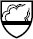
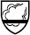
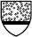
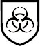

Das Angebot an unterschiedlichen Chemikalienschutzkleidungen ist vielfältig, aber nicht jede CS-Kleidung ist für jeden Zweck geeignet.
So gibt es CS-Kleidung aus isolierendem Material, die bei Chemieunfällen oder im Katastrophenschutz eingesetzt werden, aber auch aus leichterem Material welches einen Schutz gegen Chemikalienspritzer bieten kann.
Chemikalienschutzkleidung (CS-Kleidung) umfasst Kleidung, die zum Schutz gegen Chemikalien getragen wird und den ganzen Körper wie ein Chemikalienschutzanzug (CS-Anzüge) oder größere Teile des Körpers (wie eine Schürze) bedeckt.
CS-Kleidung nach den Normen DIN EN 13 034 und DIN EN 14 605 (wie Schürzen, Armschützer, Ärmelschützer, Hauben, Hosen) bedeckt nur einen Teil des Körpers und ist für den Schutz bei gelegentlichen Tätigkeiten mit Chemikalien gedacht. Solche Einzelteile werden auch als partieller Schutz bezeichnet.
Chemikalienschutzanzüge (CS-Anzüge) nach DIN EN 943 und DIN EN 13 982-1 sind Vollschutzanzüge, die meist in Verbindung mit Atemschutz verwendet werden. CS-Anzüge können aus miteinander kombinierten Kleidungsstücken bestehen, die Schutz für den Körper bieten. Ein Anzug kann auch zusätzliche Schutzmerkmale aufweisen, wie eine mit ihm verbundene Haube oder ein Helm, sowie Stiefel, Socken oder Handschuhe. Solche CS-Anzüge gibt es als Einwegschutzkleidung, für den begrenzten Mehrfacheinsatz oder als wieder verwendbare Anzüge.
Vor dem Inverkehrbringen von CS-Kleidung muss ein Hersteller wie bei jeder Persönlichen Schutzausrüstung (PSA) einige Voraussetzungen beachten:
Persönliche Schutzausrüstung wird entsprechend der einschlägigen EU-Richtlinien generell in die Kategorien I, II und III eingeordnet. Schutzausrüstungen müssen grundsätzlich mit dem CE-Zeichen gekennzeichnet sein, sonst dürfen sie nicht als PSA in den Verkehr gebracht werden. Mit der CE-Kennzeichnung bescheinigt der Hersteller, dass die Schutzausrüstung mit den festgelegten „grundsätzlichen Sicherheits- und Gesundheitsanforderungen“ der entsprechenden EU-Richtlinien konform ist.
Kategorie I gilt für einfache PSA, die dann eingesetzt wird, wenn erkennbare Gefahren drohen. Hier kann ein einfacher Staubschutzanzug gemeint sein, der im gewerblichen Bereich nur ausnahmsweise eingesetzt werden darf, denn es erfolgen keine umfangreichen Prüfungen der Produkte oder im Rahmen der Produktion. Sie sind aber als Schutz der Kleidung z.B. bei Renovierungsarbeiten oder bei Streicharbeiten mit Binderfarbe geeignet, um Flecken auf der Kleidung zu verhindern.
Kategorie II gilt für PSA gegen mittlere Risiken, die ernste Verletzungen zur Folge haben können. Zu dieser Kategorie gehört PSA gegen mechanische Gefahren wie Fußschutz, Schnittschutz, Kopfschutz oder Gehörschutz.
Kategorie III gilt für PSA, die gegen tödliche Gefahren oder ernste und irreversible Gesundheitsschäden wirken soll. Zu dieser höchsten Kategorie zählt CS-Kleidung. Bei Kategorie III muss neben der CE-Kennzeichnung eine 4-stellige Ziffer angegeben sein, die die Erkennungsziffer der überwachenden (zertifizierenden) Prüfstelle ist. Bei Gefährdungen durch Gefahrstoffe ist immer Chemikalienschutzkleidung der Kat. III anzuwenden.
Jedes Teil der Schutzkleidung muss in der offiziellen Sprache des Bestimmungslandes gekennzeichnet sein (entweder auf dem Artikel selbst oder auf angebrachten Etiketten). Die Kennzeichnung muss sichtbar, lesbar und widerstandsfähig sein.
Bei CS-Anzügen, die teilweise nur einmal verwendet werden, kann dies auch ein eingeklebtes Etikett sein, zumal durch zusätzliche Nähte die Barrierewirkung eingeschränkt wäre. An der CS-Kleidung dürfen keine Veränderungen vorgenommen werden, denn dann würde das Prüfzertifikat ungültig werden. Solche unerlaubten Veränderungen könnten aufgenähte Logos sein.
Grundsätzlich wird CS-Kleidung nach der Norm DIN EN 340 mit einem Piktogramm gekennzeichnet, das einen Erlenmeyerkolben zeigt. Das „aufgeschlagene Buch“ weist auf die Herstellerinformation hin.
CS-Kleidung mit der Kennzeichnung „Schutz gegen Chemikalien und Bedienungsanleitung lesen“
Die Kennzeichnung besteht aus Name des Herstellers, Produktbezeichnung, Größenbezeichnung, Nummer der gültigen europäischen Norm, aus Piktogrammen mit Leistungsstufen, einer Pflegekennzeichnung und der CE-Kennzeichnung mit Angabe der 4-stelligen Ziffer des Prüfinstitutes. Ist die PSA für den Einmal-Gebrauch gedacht, ist sie mit einem entsprechenden Warnhinweis zu versehen.
Die CS-Kleidung (z.B. CS-Anzüge und partielle CS-Kleidung) wird je nach den Prüfanforderungen aus den einschlägigen europäischen Normen als Typ 1 bis Typ 6 bezeichnet.
Die für CS-Anzüge geltende DIN EN 943 unterscheidet lediglich zwischen dem „gasdichten“ und dem „nicht gasdichten“ Anzug. Beim „gasdichten“ Typ 1 wird noch unterschieden in die drei Typen 1a, 1b und 1c, die sich in der an den Anzug angeschlossenen Atemluftversorgung unterscheiden. Der „nicht gasdichte“ Chemikalienschutzanzug wird als Typ 2 bezeichnet und verfügt immer über eine externe Atemluftversorgung mit Überdruck (Überdrucksysteme).
Darüber hinaus gibt es CS-Anzüge, die gemäß der verschiedenen Prüfnormen als Typ 3, Typ 4, Typ 5 oder Typ 6 oder auch mit Typkombinationen wie 3/4/5 oder 4/5 oder 5/6 bezeichnet und mit speziellen Herstellerpiktogrammen gekennzeichnet werden (Normen siehe Anhang 2).
Die Übersicht nach Tabelle 1 soll helfen, die Auswahl zu erleichtern, allerdings kann nicht darauf verzichtet werden, weitere Auskünfte aus den Herstellerinformationen zu entnehmen. Die speziellen Piktogramme sind Herstellerkennzeichnungen, die über die Anforderungen nach der Norm hinausgehen. Zusätzliche Informationen zu den Prüfnormen etc. enthält Anhang 2.
| Typ | Piktogramm allgemein nach DIN EN 340 und 943 | Spezielle Pikto- gramme *) | Bedeutung (siehe Anhang 2) |
| 1 |  |
Belüfteter oder unbelüfteter Schutzanzug mit gasdichten Übergängen | |
| 2 |  |
Belüfteter Schutzanzug mit nicht gasdichten Übergängen | |
| 3 | Schutzanzug mit flüssigkeitsdichten Übergängen, Schutz gegen Flüssigkeitsstrahl | ||
| 4 | Schutzanzug mit sprühdichten Übergängen, Schutz gegen Sprühnebel | ||
| 5 |  |
Staubschutzanzug gegen partikelförmige Chemikalien/ Aerosole | |
| 6 | Begrenzt dichter Anzug, Spritzschutz für die Arbeit mit kleineren Mengen flüssiger Chemikalien |
Tabelle 1: Typenbezeichnungen und Piktogramme zur Kennzeichnung
*) Herstellerkennzeichnung (Dupont)
Die Typen ergeben sich aus den unterschiedlichen Prüfungen, die die Anzüge zu durchlaufen haben, so dass ein einzelner Anzug mehrere Typenbezeichnungen tragen kann. Diese Bezeichnungen sagen jedoch nichts über die Qualität der Anzüge aus, sondern lediglich über die bei den Prüfungen festgestellten Eigenschaften (z.B. staubdicht) und damit über die möglichen Einsatzbereiche.
Nach den Ergebnissen der Prüfungen wird eine Typenbezeichnung vergeben, wenn die Mindestanforderungen nach Leistungsstufe 1 erreicht wurden. Wurden höherwertige Ergebnisse erzielt, wird eine höhere Leistungsstufe bis maximal 6 vergeben.
| Fähigkeit (Materialprüfungen) | Leistungsstufen (Klassen) |
| 1. Abriebfestigkeit | 1 bis 6 |
| 2. Biegerissfestigkeit bei unterschiedlichen Temperaturen | 1 bis 6 |
| 3. Weiterreißfestigkeit | 1 bis 6 |
| 4. Berstfestigkeit | 1 bis 6 |
| 5. Zugfestigkeit | 1 bis 6 |
| 6. Durchstichfestigkeit | 1 bis 6 |
| 7. Widerstand gegen die Permeation von Chemikalien | 1 bis 6 |
| 8. Abstoßungsfähigkeit gegen Flüssigkeiten: Schwefelsäure (30%), Natronlauge (10%), o-Xylen, 1-Butanol | 1 bis 3 |
| 9. Widerstand gegen die Penetration von Flüssigkeiten | 1 bis 3 |
| 10. Widerstand gegen Entflammung | Ja/Nein |
| 11. Widerstand gegen Flammeneinwirkung | 1 bis 3 |
| 12. Nahtfestigkeit | 1 bis 6 |
| usw. |
Tabelle 2: Beispiele für Prüfungen der CS-Kleidung oder der Materialien aus denen sie gefertigt wird und Leistungsstufen (Klassen)
Die verschiedenen Typen der CS-Anzüge (Typ 1 bis Typ 6) müssen unterschiedlichen Prüfungen unterzogen werden. So müssen CS-Anzüge Typ 5 gegen Abrieb-, Biegeriss-, Weiterreißund Durchstichsicherheit geprüft werden und dürfen nicht entflammbar sein. CS-Anzüge Typ 3/4 müssen darüber hinaus eine Prüfung für Zugfestigkeit und gegen die Permeation sowie Penetration von Chemikalien durchlaufen. Bei der Auswahl der CS-Kleidung ist also zunächst die richtige Type auszuwählen und nach dem Maß der Gefährdung sind dann die Leistungsstufen festzulegen.
In der Herstellerinformation ist nachzulesen, welche Prüfungen durchlaufen wurden und welche Leistungsstufen (Klassen) erreicht wurden.
Je höher die Leistungsstufen sind, desto größer ist die Schutzwirkung.
CS-Anzüge mit geprüfter Barrierewirkung gegen Bakterien sind mit dem Piktogramm für „bakteriologische Kontamination“ gekennzeichnet.
Kennzeichnung „bakteriologische Kontamination“

Die Schutzkleidung ist dem Kunden mit schriftlichen Informationen auszuliefern. CS-Anzüge werden in der Regel mit einer Herstellerinformation ausgeliefert, die folgendes enthält:
In der Herstellerinformation sind außerdem Warnhinweise angegeben, die Piktogramme und Leistungsstufen werden erläutert und die Nummern der einschlägigen Europäischen Norm werden mit Veröffentlichungsjahr angegeben.
Einige Hersteller bieten die Gebrauchanweisungen zusätzlich im Internet als „download“ an, für den Fall, dass das Dokument nicht mehr griffbereit ist.
Der Information des Herstellers kann außerdem eine Aufstellung der Chemikalien oder Chemikaliengemische entnommen werden, gegen welche die Schutzkleidung geprüft worden ist, sowie die Leistungsstufe, die bei dieser Prüfung erreicht wurde. Da in der Regel eine ganze Reihe von Prüfungen durchgeführt wird, werden die Ergebnisse der Übersichtlichkeit wegen häufig tabellarisch angegeben.
Weitere zusätzliche Leistungsmerkmale, gegen die die CS-Kleidung ggf. geprüft worden ist, sind ebenfalls aufgelistet. Hierzu gehören die Prüfungen gegen mechanische Beständigkeit. Dies sind wichtige Informationen z.B. für den Fall, dass in dem Arbeitsbereich in dem die Schutzkleidung eingesetzt werden soll, solche zusätzlichen Gefährdungen im Rahmen der Gefährdungsbeurteilung festgestellt worden sind. Muss in einem engen Bereich gearbeitet werden, sollte ein CS-Anzüge eingesetzt werden, der eine hohe mechanische Beständigkeit hat und nicht so dünn ist, dass er schnell reißt.
Die Zusatzinformationen helfen also auch schnell festzustellen, ob die CS-Kleidung auch gegen diese Gefährdung schützt.